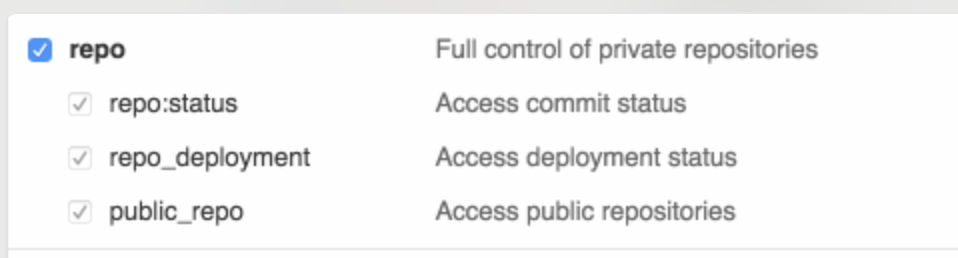

Setup: Tech stack
As with any computer science or data science course, several tools and software packages are needed for this course. These tools are not used by the typical consumer, so most Windows or macOS installations will not include them. Even on machines which do include them (such as many Linux distributions), they may still need some configuration. Below you will find guides to install the tech stack for CPSC 203, with different guides for different operating systems. A tech stack is the complete set of tools and technologies needed to accomplish a particular task; in this case, it is the various programming and data analytics that we will explore in CPSC 203.
As you go through the install guides, remember that perhaps the two most important things you will learn in this course is how to troubleshoot things and achieve familiarity and proficiency with your computer. Be patient, read things carefully, do not be afraid to try things, it’s unlikely you will do anything to irreversibly break your computer! Almost everything you do (you’re on your own if you decide to take a hammer to your laptop!) can be undone, don’t be afraid to ask your peers, TAs, and the instructor on Giscus below (you will need to set up an GitHub account first).
This is an exciting time for you as you begin your Software Development journey!
Hardware
Before starting, ensure that your laptop meets the minimum requirements:
- Can connect to networks via a wireless connection.
- Has at least 25 GB disk space available.
- Has at least 4 GB of RAM (more is recommended).
- Uses a 64-bit CPU.
- Is at most 6 years old at the start of the course (4 years old or newer is recommended).
- Student user has full administrative access to the computer.
If your computer does not meet any of the requirements above, please don’t just drop the course!! Let me know first and we can discuss alternate possibilities so you can still take the course.
Software
These installation notes assume you are starting with a fresh install, without any custom setups. Following the instructions below will help you install and configure the tech stack correctly in the same way for our course, enabling us to support you effectively and minimize setup issues and software conflicts.
In all the sections below, if you are presented with the choice to download either a 64-bit (also called x64) or a 32-bit (also called x86) version of the application always choose the 64-bit version.
In all the sections below, if you are presented with the choice to download either a 64-bit (also called x64) or a 32-bit (also called x86) version of the application always choose the 64-bit version. If you purchased a Mac anytime in the last few years, chances are you have an “M1/M2/M3/M4”… Mac, also known as “Apple Silicon”, and “arm64”. When given the option, you should choose to download the “arm64”/Apple Silicon or the “Universal versions—if that choice doesn’t exist, then you can choose the”x86” version which will run in “emulated mode”, which will result in a slight performance penalty.
Operating system (OS)
We strongly suggest to run the latest version of the operating system (OS) available for your laptop.
If you update or upgrade your OS you do so on your own risk!
In general, there are many good reasons to update your OS. Some of the software tools or their functionality used in our tutorials will only work on more recent OS versions. Updating your OS will also ensure that you have the latest security updates installed and help prevent unauthorized access to your computer.
There a two main reasons that would prevent you from updating your OS:
- Your hardware would not support the updated OS.
- Some of your software you depend on might not work on a newer OS.
The latest version of Windows 11 available is 24H2 (build 26100.6584). See here on how to update your Windows 11 machine to the latest version. If you do not own Windows 11, currently enrolled UBC students with a valid CWL account qualify for one license of Windows 11 Education.
The latest version of macOS is Tahoe 16.0. Check your current version of macOS. If you do not have the latest version, follow the upgrade instructions on the Apple support page.
If you cannot upgrade to the latest version, follow these instructions to find the system requirements and upgrade to latest versions available to you. If you need to maintain 32-bit compatibility for any of your software, then upgrade to no higher than macOS 10.14 Mojave.
Terminal
A terminal program allows you to interact with many different programs using a command line interface. Instead of using graphical elements like in a graphical user interface, you type in commands describing what program you want to use and how you want to use it.
The terminal app Terminal comes preinstalled with Windows. Activate the Windows Start menu, start typing “terminal” and select the Terminal app by pressing EnterEnter.
The terminal app Terminal comes preinstalled with macOS. Activate Spotlight with Command-SpaceCommand-Space, start typing “terminal” and select the Terminal app by pressing EnterEnter.
You will need to open the terminal several times in these instructions to install other programs.
Package manager
A package manager is a program allowing you to install and update programs on your computer, similar to the Microsoft Store on Windows or the App Store on macOS. The main difference of a package manager to these programs is that you use them with a command line interface running in a terminal instead of a graphical user interface.
If you have at least Windows 10 version 1809 (build 17763) or later installed on your machine, you will already have the package manager WinGet available to you. When you use WinGet for the first time, you will be asked to register the Windows Package Manager with the Microsoft Store.
If you cannot update your Windows to a version that supports WinGet, please reach out to the teaching team.
Resources
We will use one of the most popular package managers on macOS called Homebrew. Open your Terminal, and then enter the following command:
/bin/bash -c "$(curl -fsSL https://raw.githubusercontent.com/Homebrew/install/HEAD/install.sh)"You will be asked to enter the password for your computer:
==> Checking for `sudo` access (which may request your password)...Enter your password (it is normal that the cursor will not move as you enter characters for a password) and hit EnterEnter.
Next, the installation will install the XCode Command Line Tools:
The XCode Command Line Tools will be installed.A new window will open with the following prompt:
The “xcode-select” command requires the command line developer tools. Would you like to install the tools now?
Choose Install to download and install the command line developer tools now.” Confirm by clicking on “Install”.
Afterwards, back in the terminal, you will be informed what steps will be executed:
==> This script will install:
/opt/homebrew/bin/brew
/opt/homebrew/share/doc/homebrew
/opt/homebrew/share/man/man1/brew.1
/opt/homebrew/share/zsh/site-functions/_brew
/opt/homebrew/etc/bash_completion.d/brew
/opt/homebrew
/etc/paths.d/homebrew
Press RETURN/ENTER to continue or any other key to abort:Confirm with EnterEnter. When the installation is finished, you will be asked to run the following command in the terminal to add Homebrew to your PATH:
echo >> "${HOME}/.zprofile"
echo 'eval "$(/opt/homebrew/bin/brew shellenv)"' >> "${HOME}/.zprofile"
eval "$(/opt/homebrew/bin/brew shellenv)"Now test if Homebrew works:
brew --versionYou should see the following:
Homebrew 4.6.11Resources
Python
Installing uv
We will be using Python for a large part of the course, and uv will be our Python package manager. Instead of installing Python separately on our machine, we will use uv to provision us with Python whenever we need to run it.
In the terminal, install uv with Winget:
winget install -e --id=astral-sh.uvIn the terminal install uv with Homebrew:
brew install uvTo check if uv installed successfully, type in the terminal:
uv --versionAnd you should see something like this
uv 0.8.18 <some-installer-specific-information>Resources
marimo
We will be writing our code in a notebook app called marimo. marimo is itself a Python package, so we can use uv to install and run it. In particular, we will use the command uvx which will check if we have the latest version of marimo and everything else necessary to run it, even Python itself!
uvx marimo --versionAnd you should see:
0.16.0Even better, try this:
uvx marimo tutorial introAnd your default browser should open a window showing marimo.
For now, let’s shut down marimo by clicking on the red x in the top right corner and then on the “Shutdown” button.
Now you are ready to run Python code on your local machine!!!
Resources
Optional software
If you are interested in using a very common software development tool and platform for version control, check out Git and GitHub. We also have two examples with Zoom or your web browser on how to install and update everyday software with a package manager.
Git and GitHub
We will be using the command line version of Git.
Git is installed as part of Git Bash. Open your terminal, and install Git Bash with
winget install -e --id Git.GitRestart your terminal.
Open your terminal, and install Git with:
brew install gitIn the terminal, type the following to check the Git version:
git --versionYou should see something like this if everything is working correctly:
git version 2.51.0GitHub.com account
Sign up for a free account at GitHub.com if you don’t have one already. Your GitHub.com username is important, so here some advice on picking a username and below an image on how to find it again.

Configuring Git user info
Next, we need to configure Git by telling it your name and email. To do this, provide your name and GitHub email by typing into the terminal:
git config --global user.name "<your-name>"
git config --global user.email "<your-github-email>"To ensure that you haven’t made a typo in any of the above, you can view your global Git configurations by either opening the configuration file in a text editor (e.g., via the command code ~/.gitconfig) or by typing git config --list --global. You can quit this view by just pressing the q key on your keyboard.
Create your GitHub “Personal Access Token”
This is a bit tricky, so please make sure you follow these directions carefully.
Start creating a personal access token (PAT) on GitHub.com either by
Clicking this link: https://github.com/settings/tokens/new
Navigating to your tokens by following these steps:
- Log in to GitHub.com
- Click your picture in the top right and select “Settings”
- Click on “Developer Settings”
- Click on “Personal access tokens” and then on “Tokens (classic)”
- Click “Generate new token”
Give the token a name in the note field, for example,
CPSC 203Choose for expiration “Custom” and set the date to the end of this term: 2025-12-05
Set the scope of the token to the “repo” level (see image below):

Personal access token settings Click “Generate new token”
Copy the token that is shown to you. It is essentially a password for apps on your computer (for example, Git) to enable them to take actions on GitHub.com for you (in this case, clone a private repository to your computer). Treat this password like any other of your other passwords, so don’t share your token with anyone.
Save this token somewhere safe on your computer, such as a password manager. You will not be able to come back to this page to get your token. If you forget or lose a token, you can just delete that token on GitHub.com where you manage all existing tokens and create another one: https://github.com/settings/tokens

Clone your first repository on your computer
Open the terminal, and then run the following command:
git clone https://github.com/firasm/test.gitHopefully, if things work, you should be able to see a new folder created at that location. We will be talking more about what exactly you did over the next week and a bit, don’t worry!
If after running the code above, you see the error message:
fatal: destination path 'test' already exists and is not an empty directory. It means that you already attempted a clone before, and there is already a directory called test where you are trying to clone this repository. You will first need to delete that directory to try again. Open an Explorer (Windows) or Finder (macOS) window on your computer, navigate to the directory, right click the test directory and delete it. Alternatively, from the command line you can try:
rm -rf testwhich will “remove” (using the rm command) the directory called test. The- is to specify additional options: r means “recursively” for all the files in the directory, and f means “force” which means don’t ask me for confirmation after deleting each file and folder.
Zoom
So far, we have been using the package manager to install software development tools. We can use the package manager to install other everyday software making it easier to find the correct version for your hardware or update to the latest release. For example, you might attend office hours or a livestream using Zoom Workplace and you should install the Zoom client locally on your machine.
In your terminal, use WinGet to install Zoom:
winget install -e --id Zoom.ZoomIn your terminal, use Homebrew to install Zoom:
brew install --cask zoomIt is important that you have the most recent version of Zoom installed, as we will be using many of the features that are only available in more recent versions. The latest version of Zoom is 6.6.0 (64511). For a lot of software, there is an option to check for updates.

A package manager can directly update any software you have installed with it.
winget upgrade -e --id Zoom.Zoombrew upgrade --cask zoomPlease note that if you have been relying on the “web version” of Zoom that works only in a browser, this will not work for this course! Please make sure to download the Zoom desktop client for your operating system to fully participate in the course.
Web browser
You are welcome to use most modern browsers that have a WebKit or Gecko backend. Safari (Mac only), Firefox, Vivaldi, Brave, Edge are all recommended. Google Chrome is not recommended because of the well-documented privacy and tracking issues with Google.
Optional: try to install the browser also with the package manager! Use this website to find the install instruction for the browser of your choice:
Attribution
These instructions have been adapted and remixed from the original version provided by the UBC-Vancouver MDS Install stack under a CC-BY-SA 4.0 license. They were originally written by Anmol Jawandha but have since been updated by Stephan Koenig, Firas Moosvi, Joel Ostblom, Tomas Beuzen, Rodolfo Lourenzutti, Tiffany Timbers, and others.